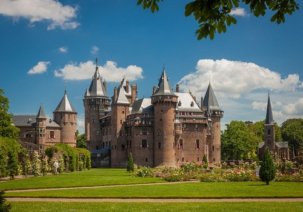
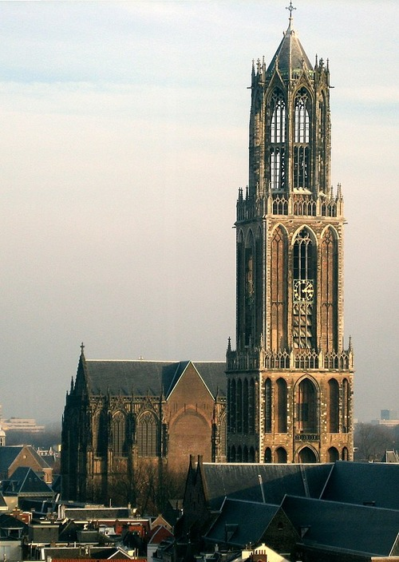

Utrecht
Castle De Haar
De Haar Castle is located outside the Dutch city of Utrecht. The Netherlands' biggest castle is this one. Imagine walking along paths surrounded by graceful flowerbeds, peaceful ponds, and historical trees. You are taken back in time, to a place where stories come to life, by the soft sound of the river lapping and the whisper of wind through the branches.
Dom Tower
With a height of 112.32 meters, the Dom Tower of Utrecht is the tallest church tower in the Netherlands. It is regarded as Utrecht's emblem.
